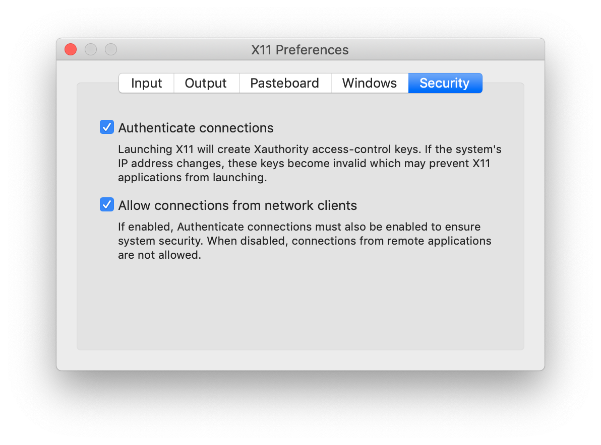

Docker
Install Docker Desktop.
Download dmg and install.
Run tutorial:
$ cd
$ mkdir Docker
$ cd Docker
$ git clone https://github.com/docker/getting-started.git
$ cd getting-started
$ docker build -t docker101tutorial .
$ docker run -d -p 80:80 --name docker-tutorial docker101tutorial
$ docker tag docker101tutorial avillasenorh/docker101tutorial
$ docker push avillasenorh/docker101tutorial
Login to dockerhub
Docker course/book
$ git clone https://github.com/docker/doodle.git
$ cd doodle/cheers2019 && docker build -t avillasenorh/cheers2019 .
$ docker run -it --rm avillasenorh/cheers2019
$ docker login && docker push avillasenorh/cheers2019
$ docker version
...
$ docker --version
$ docker-compose --version
$ docker-machine --version
$ notary version
$ docker image ls
REPOSITORY TAG IMAGE ID CREATED SIZE
avillasenorh/cheers2019 latest 415686aae5f6 4 days ago 4.01MB
<none> <none> 7702daeafbab 4 days ago 356MB
golang 1.11-alpine e116d2efa2ab 3 months ago 312MB
$ docker system info
Client:
Debug Mode: false
Server:
Containers: 0
Running: 0
Paused: 0
Stopped: 0
Images: 8
Server Version: 19.03.4
Storage Driver: overlay2 !!!!!!!!! storage driver used (good for Ubuntu, RH >= 4.x)
Backing Filesystem: extfs
Supports d_type: true
Native Overlay Diff: true
Logging Driver: json-file
Cgroup Driver: cgroupfs
Plugins:
Volume: local
Network: bridge host ipvlan macvlan null overlay
Log: awslogs fluentd gcplogs gelf journald json-file local logentries splunk syslog
Swarm: inactive
Runtimes: runc
Default Runtime: runc
Init Binary: docker-init
containerd version: b34a5c8af56e510852c35414db4c1f4fa6172339
runc version: 3e425f80a8c931f88e6d94a8c831b9d5aa481657
init version: fec3683
Security Options:
seccomp
Profile: default
Kernel Version: 4.9.184-linuxkit
Operating System: Docker Desktop
OSType: linux
Architecture: x86_64
CPUs: 2
Total Memory: 1.952GiB
Name: docker-desktop
ID: HN4Y:T3NM:PXHK:Y6X5:XW7H:ZFCX:FPUS:5BZZ:KLER:24WB:6EFH:B6BS
Docker Root Dir: /var/lib/docker
Debug Mode: true
File Descriptors: 30
Goroutines: 46
System Time: 2019-11-21T10:47:33.8906462Z
EventsListeners: 2
HTTP Proxy: gateway.docker.internal:3128
HTTPS Proxy: gateway.docker.internal:3129
Registry: https://index.docker.io/v1/
Labels:
Experimental: false
Insecure Registries:
127.0.0.0/8
Live Restore Enabled: false
Product License: Community Engine
$ docker pull ubuntu:latest
latest: Pulling from library/ubuntu
7ddbc47eeb70: Pull complete
c1bbdc448b72: Pull complete
8c3b70e39044: Pull complete
45d437916d57: Pull complete
Digest: sha256:6e9f67fa63b0323e9a1e587fd71c561ba48a034504fb804fd26fd8800039835d
Status: Downloaded newer image for ubuntu:latest
docker.io/library/ubuntu:latest
$ docker image ls
REPOSITORY TAG IMAGE ID CREATED SIZE
avillasenorh/cheers2019 latest 415686aae5f6 4 days ago 4.01MB
<none> <none> 7702daeafbab 4 days ago 356MB
ubuntu latest 775349758637 2 weeks ago 64.2MB
golang 1.11-alpine e116d2efa2ab 3 months ago 312MB
$ docker container run -it ubuntu:latest /bin/bash
root@dc672cdb77cc:/# ps -elf
F S UID PID PPID C PRI NI ADDR SZ WCHAN STIME TTY TIME CMD
4 S root 1 0 0 80 0 - 4626 - 11:01 pts/0 00:00:00 /bin/bash
0 R root 13 1 0 80 0 - 8599 - 11:05 pts/0 00:00:00 ps -elf
-it flag switchs your shell into the terminal of the container
control + P + Q (p and q in sequence, not simultaneously): exits the container without terminating it (back to shell of host machine)
$ docker container ls # shows processes running inside container
CONTAINER ID IMAGE COMMAND CREATED STATUS PORTS NAMES
dc672cdb77cc ubuntu:latest "/bin/bash" 8 minutes ago Up 8 minutes trusting_chandrasekhar
To enter again:
$ docker container exec -it trusting_chandrasekhar bash
root@dc672cdb77cc:/# ps -elf
F S UID PID PPID C PRI NI ADDR SZ WCHAN STIME TTY TIME CMD
4 S root 1 0 0 80 0 - 4626 - 11:01 pts/0 00:00:00 /bin/bash
4 S root 14 0 0 80 0 - 4626 - 11:14 pts/1 00:00:00 bash
0 R root 23 14 0 80 0 - 8599 - 11:14 pts/1 00:00:00 ps -elf
control + P + Q again
To stop container:
$ docker container stop trusting_chandrasekhar
$ docker container rm trusting_chandrasekhar
$ docker container ls -a
CONTAINER ID IMAGE COMMAND CREATED STATUS PORTS NAMES
EXAMPLE
$ git clone https://github.com/nigelpoulton/psweb.git
$ cd psweb/
$ cat Dockerfile
$ docker image build -t test:latest .
$ $ docker image ls
REPOSITORY TAG IMAGE ID CREATED SIZE
test latest ac4605aff0f1 About a minute ago 71.5MB
avillasenorh/cheers2019 latest 415686aae5f6 4 days ago 4.01MB
<none> <none> 7702daeafbab 4 days ago 356MB
ubuntu latest 775349758637 2 weeks ago 64.2MB
alpine latest 965ea09ff2eb 4 weeks ago 5.55MB
golang 1.11-alpine e116d2efa2ab 3 months ago 312MB
$ docker container run -d --name web1 --publish 8080:8080 test:latest
X-windows applications in Docker
Example of how to create an image with Firefox and send the display to
macOS host running X-windows:
Dockerfile:
FROM ubuntu:latest
RUN apt-get update && \
apt-get install firefox -y
CMD /usr/bin/firefox
To create the Docker image named myfirefox from the Dockerfile, go to the
directory of the Dockerfile and type:
$ docker build -t myfirefox .
Set "Allow connections from network clients" in XQuartz Preferences (Security tab):

(Probably you need to logout and login again to activate changes)
How to run:
$ xhost + 127.0.0.1 # authorize connetions only from localhost (also known as loopback address)
$ docker run --rm -d -e DISPLAY=host.docker.internal:0 myfirefox